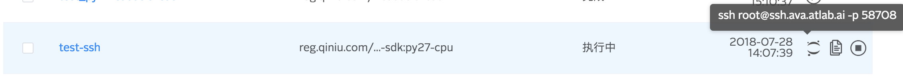

<!DOCTYPE HTML>
<html lang="" >
    <head>
        <meta charset="UTF-8">
        <meta content="text/html; charset=utf-8" http-equiv="Content-Type">
        <title>5.2.1 使用 SSH 登录工作台 · GitBook</title>
        <meta http-equiv="X-UA-Compatible" content="IE=edge" />
        <meta name="description" content="">
        <meta name="generator" content="GitBook 3.2.3">
        
        
        
    
    <link rel="stylesheet" href="../gitbook/style.css">

    
            
                
                <link rel="stylesheet" href="../gitbook/gitbook-plugin-search-plus/search.css">
                
            
                
                <link rel="stylesheet" href="../gitbook/gitbook-plugin-alerts/style.css">
                
            
                
                <link rel="stylesheet" href="../gitbook/gitbook-plugin-anchors/plugin.css">
                
            
                
                <link rel="stylesheet" href="../gitbook/gitbook-plugin-highlight/website.css">
                
            
                
                <link rel="stylesheet" href="../gitbook/gitbook-plugin-fontsettings/website.css">
                
            
        

    

    
        
    
        
    
        
    
        
    
        
    
        
    

        
    
    
    <meta name="HandheldFriendly" content="true"/>
    <meta name="viewport" content="width=device-width, initial-scale=1, user-scalable=no">
    <meta name="apple-mobile-web-app-capable" content="yes">
    <meta name="apple-mobile-web-app-status-bar-style" content="black">
    <link rel="apple-touch-icon-precomposed" sizes="152x152" href="../gitbook/images/apple-touch-icon-precomposed-152.png">
    <link rel="shortcut icon" href="../gitbook/images/favicon.ico" type="image/x-icon">

    
    <link rel="next" href="5.2.2-snapshot.html" />
    
    
    <link rel="prev" href="5.2-workspace.html" />
    

    </head>
    <body>
        
<div class="book">
    <div class="book-summary">
        
            
<div id="book-search-input" role="search">
    <input type="text" placeholder="Type to search" />
</div>

            
                <nav role="navigation">
                


<ul class="summary">
    
    

    

    
        
        
    
        <li class="chapter " data-level="1.1" data-path="../">
            
                <a href="../">
            
                    
                    Introduction
            
                </a>
            

            
        </li>
    
        <li class="chapter " data-level="1.2" data-path="../01-introduction.html">
            
                <a href="../01-introduction.html">
            
                    
                    1 概述
            
                </a>
            

            
        </li>
    
        <li class="chapter " data-level="1.3" data-path="../02-quick-start.html">
            
                <a href="../02-quick-start.html">
            
                    
                    2 Quick Start
            
                </a>
            

            
        </li>
    
        <li class="chapter " data-level="1.4" data-path="../03-concepts/3.0-concepts.html">
            
                <a href="../03-concepts/3.0-concepts.html">
            
                    
                    3 AVA 基础概念
            
                </a>
            

            
            <ul class="articles">
                
    
        <li class="chapter " data-level="1.4.1" data-path="../03-concepts/3.1-dataset.html">
            
                <a href="../03-concepts/3.1-dataset.html">
            
                    
                    3.1 数据集
            
                </a>
            

            
        </li>
    
        <li class="chapter " data-level="1.4.2" data-path="../03-concepts/3.2-shared-storage.html">
            
                <a href="../03-concepts/3.2-shared-storage.html">
            
                    
                    3.2 共享存储
            
                </a>
            

            
        </li>
    
        <li class="chapter " data-level="1.4.3" data-path="../03-concepts/3.3-workspace-and-training.html">
            
                <a href="../03-concepts/3.3-workspace-and-training.html">
            
                    
                    3.3 工作台与训练
            
                </a>
            

            
        </li>
    
        <li class="chapter " data-level="1.4.4" data-path="../03-concepts/3.4-quota.html">
            
                <a href="../03-concepts/3.4-quota.html">
            
                    
                    3.4 Quota
            
                </a>
            

            
        </li>
    
        <li class="chapter " data-level="1.4.5" data-path="../03-concepts/3.5-image.html">
            
                <a href="../03-concepts/3.5-image.html">
            
                    
                    3.5 镜像
            
                </a>
            

            
        </li>
    
        <li class="chapter " data-level="1.4.6" data-path="../03-concepts/3.6-model.html">
            
                <a href="../03-concepts/3.6-model.html">
            
                    
                    3.6 模型
            
                </a>
            

            
        </li>
    
        <li class="chapter " data-level="1.4.7" data-path="../03-concepts/3.7-workflow.html">
            
                <a href="../03-concepts/3.7-workflow.html">
            
                    
                    3.7 工作流
            
                </a>
            

            
        </li>
    

            </ul>
            
        </li>
    
        <li class="chapter " data-level="1.5" data-path="../04-register.html">
            
                <a href="../04-register.html">
            
                    
                    4 AVA 申请注册流程
            
                </a>
            

            
        </li>
    
        <li class="chapter " data-level="1.6" data-path="5.0-tasks.html">
            
                <a href="5.0-tasks.html">
            
                    
                    5 AVA 基础教程
            
                </a>
            

            
            <ul class="articles">
                
    
        <li class="chapter " data-level="1.6.1" data-path="5.1-dataset.html">
            
                <a href="5.1-dataset.html">
            
                    
                    5.1 数据集管理
            
                </a>
            

            
        </li>
    
        <li class="chapter " data-level="1.6.2" data-path="5.2-workspace.html">
            
                <a href="5.2-workspace.html">
            
                    
                    5.2 工作台管理
            
                </a>
            

            
            <ul class="articles">
                
    
        <li class="chapter active" data-level="1.6.2.1" data-path="5.2.1-ssh.html">
            
                <a href="5.2.1-ssh.html">
            
                    
                    5.2.1 使用 SSH 登录工作台
            
                </a>
            

            
        </li>
    
        <li class="chapter " data-level="1.6.2.2" data-path="5.2.2-snapshot.html">
            
                <a href="5.2.2-snapshot.html">
            
                    
                    5.2.2 创建工作台快照
            
                </a>
            

            
        </li>
    
        <li class="chapter " data-level="1.6.2.3" data-path="5.2.3-monitor.html">
            
                <a href="5.2.3-monitor.html">
            
                    
                    5.2.3 训练监控管理
            
                </a>
            

            
        </li>
    

            </ul>
            
        </li>
    
        <li class="chapter " data-level="1.6.3" data-path="5.3-training.html">
            
                <a href="5.3-training.html">
            
                    
                    5.3 训练管理
            
                </a>
            

            
            <ul class="articles">
                
    
        <li class="chapter " data-level="1.6.3.1" data-path="5.3.1-distributed.html">
            
                <a href="5.3.1-distributed.html">
            
                    
                    5.3.1 分布式训练管理
            
                </a>
            

            
        </li>
    

            </ul>
            
        </li>
    
        <li class="chapter " data-level="1.6.4" data-path="5.4-model.html">
            
                <a href="5.4-model.html">
            
                    
                    5.4 模型管理
            
                </a>
            

            
        </li>
    
        <li class="chapter " data-level="1.6.5" data-path="5.5-image.html">
            
                <a href="5.5-image.html">
            
                    
                    5.5 镜像管理
            
                </a>
            

            
        </li>
    
        <li class="chapter " data-level="1.6.6" data-path="5.6-workflow.html">
            
                <a href="5.6-workflow.html">
            
                    
                    5.6 工作流管理
            
                </a>
            

            
        </li>
    

            </ul>
            
        </li>
    
        <li class="chapter " data-level="1.7" data-path="../06-tutorial-classification/6.0-classification.html">
            
                <a href="../06-tutorial-classification/6.0-classification.html">
            
                    
                    6 Tutorial: 训练图像分类模型
            
                </a>
            

            
            <ul class="articles">
                
    
        <li class="chapter " data-level="1.7.1" data-path="../06-tutorial-classification/6.1-dataset-with-jsonlist.html">
            
                <a href="../06-tutorial-classification/6.1-dataset-with-jsonlist.html">
            
                    
                    6.1 准备数据集 (数据集管理方式)
            
                </a>
            

            
        </li>
    
        <li class="chapter " data-level="1.7.2" data-path="../06-tutorial-classification/6.2-dataset-with-sharing.html">
            
                <a href="../06-tutorial-classification/6.2-dataset-with-sharing.html">
            
                    
                    6.2 准备数据集 (组/Bucket 共享方式)
            
                </a>
            

            
        </li>
    
        <li class="chapter " data-level="1.7.3" data-path="../06-tutorial-classification/6.3-start-training.html">
            
                <a href="../06-tutorial-classification/6.3-start-training.html">
            
                    
                    6.3 开始训练
            
                </a>
            

            
        </li>
    

            </ul>
            
        </li>
    
        <li class="chapter " data-level="1.8" data-path="../07-tutorial-OCR/ocr.html">
            
                <a href="../07-tutorial-OCR/ocr.html">
            
                    
                    7 Tutorial: 训练 OCR 模型
            
                </a>
            

            
        </li>
    
        <li class="chapter " data-level="1.9" data-path="../08-tutorial-SSD/ssd.html">
            
                <a href="../08-tutorial-SSD/ssd.html">
            
                    
                    8 Tutorial: 训练 SSD 模型
            
                </a>
            

            
        </li>
    
        <li class="chapter " data-level="1.10" data-path="../09-faq/faq.html">
            
                <a href="../09-faq/faq.html">
            
                    
                    9 FAQ
            
                </a>
            

            
        </li>
    

    

    <li class="divider"></li>

    <li>
        <a href="https://www.gitbook.com" target="blank" class="gitbook-link">
            Published with GitBook
        </a>
    </li>
</ul>


                </nav>
            
        
    </div>

    <div class="book-body">
        
            <div class="body-inner">
                
                    

<div class="book-header" role="navigation">
    

    <!-- Title -->
    <h1>
        <i class="fa fa-circle-o-notch fa-spin"></i>
        <a href=".." >5.2.1 使用 SSH 登录工作台</a>
    </h1>
</div>


                    <div class="page-wrapper" tabindex="-1" role="main">
                        <div class="page-inner">
                            
<div class="search-plus" id="book-search-results">
    <div class="search-noresults">
    
                                <section class="normal markdown-section">
                                
                                <h1 id="&#x4F7F;&#x7528;-ssh-&#x8FDE;&#x63A5;&#x5DE5;&#x4F5C;&#x53F0;"><a name="&#x4F7F;&#x7528;-ssh-&#x8FDE;&#x63A5;&#x5DE5;&#x4F5C;&#x53F0;" class="plugin-anchor" href="#&#x4F7F;&#x7528;-ssh-&#x8FDE;&#x63A5;&#x5DE5;&#x4F5C;&#x53F0;"><i class="fa fa-link" aria-hidden="true"></i></a>&#x4F7F;&#x7528; SSH &#x8FDE;&#x63A5;&#x5DE5;&#x4F5C;&#x53F0;</h1>
<h2 id="&#x914D;&#x7F6E;-ssh-&#x5BA2;&#x6237;&#x7AEF;&#x516C;&#x94A5;"><a name="&#x914D;&#x7F6E;-ssh-&#x5BA2;&#x6237;&#x7AEF;&#x516C;&#x94A5;" class="plugin-anchor" href="#&#x914D;&#x7F6E;-ssh-&#x5BA2;&#x6237;&#x7AEF;&#x516C;&#x94A5;"><i class="fa fa-link" aria-hidden="true"></i></a>&#x914D;&#x7F6E; SSH &#x5BA2;&#x6237;&#x7AEF;&#x516C;&#x94A5;</h2>
<p>&#x7528;&#x6237;&#x5FC5;&#x987B;&#x4F7F;&#x7528;&#x5DF2;&#x6CE8;&#x518C;&#x7684;&#x5BA2;&#x6237;&#x7AEF;&#x516C;&#x94A5;&#x624D;&#x80FD;&#x767B;&#x5F55;&#x5DE5;&#x4F5C;&#x53F0;. &#x9996;&#x6B21;&#x4F7F;&#x7528;&#x8BF7;&#x751F;&#x6210;&#x5E76;&#x6CE8;&#x518C; SSH &#x5BA2;&#x6237;&#x7AEF;&#x5BC6;&#x94A5;.</p>
<ol>
<li><p>&#x5728;&#x81EA;&#x5DF1;&#x7684;&#x7535;&#x8111;&#x4E0A;&#x751F;&#x6210; SSH &#x5BA2;&#x6237;&#x7AEF;&#x5BC6;&#x94A5;&#xFF0C;&#x5728;&#x672C;&#x5730;Terminal&#x5185;&#x8F93;&#x5165;:</p>
<pre><code class="lang-sh"> $ ssh-keygen -t rsa -C <span class="hljs-string">&quot;&lt;your-email&gt;&quot;</span> -b 4096
</code></pre>
<p> &#x5C06; <code>&lt;your-email&gt;</code> &#x66FF;&#x6362;&#x4E3A;&#x81EA;&#x5DF1;&#x7684;&#x90AE;&#x7BB1;&#x5730;&#x5740;, &#x9ED8;&#x8BA4;&#x5BC6;&#x94A5;&#x751F;&#x6210;&#x5728; <code>~/.ssh/id_rsa</code>, &#x5305;&#x542B;&#x79C1;&#x94A5; <code>~/.ssh/id_rsa</code> &#x548C;&#x5BF9;&#x5E94;&#x516C;&#x94A5; <code>~/.ssh/id_rsa.pub</code>.</p>
<blockquote>
<p><strong>[info] Tips:</strong></p>
<ul>
<li>&#x8BF7;&#x4FDD;&#x62A4;&#x597D;&#x79C1;&#x94A5;, &#x516C;&#x94A5;&#x53EF;&#x63D0;&#x4F9B;&#x7ED9;&#x9700;&#x8981;&#x8FDE;&#x63A5;&#x7684;&#x670D;&#x52A1;&#x65B9;. <strong>&#x79C1;&#x94A5;&#x610F;&#x5916;&#x6CC4;&#x9732;&#x540E;&#x8BF7;&#x7ACB;&#x5373;&#x4FEE;&#x6539;</strong></li>
<li>&#x751F;&#x6210;&#x5BC6;&#x94A5;&#x65F6;&#x53EF;&#x4EE5;&#x9009;&#x62E9;&#x542F;&#x7528;&#x5BC6;&#x7801;, &#x6BCF;&#x6B21;&#x4F7F;&#x7528;&#x5BC6;&#x94A5;&#x65F6;&#x9700;&#x8F93;&#x5165;&#x5BC6;&#x7801;</li>
<li>&#x5982;&#x679C;&#x9009;&#x62E9;&#x5C06;&#x5BC6;&#x94A5;&#x751F;&#x6210;&#x5728;&#x5176;&#x5B83;&#x76EE;&#x5F55;, &#x767B;&#x5F55;&#x65F6;&#x9700;&#x6307;&#x5B9A;&#x79C1;&#x94A5;&#x8DEF;&#x5F84;, &#x8BE6;&#x89C1;&#x4E0B;&#x6587;</li>
</ul>
</blockquote>
</li>
<li><p>&#x767B;&#x5F55; AVA Portal, &#x5728;&#x3010;&#x8BBE;&#x7F6E;&#x3011;&#x9875;&#x9762;&#x4E2D;&#x3010;&#x65B0;&#x5EFA;SSH Key&#x3011;.&#x5C06;&#x516C;&#x94A5;&#x7C98;&#x8D34;&#x8FDB;&#x53BB;&#xFF0C;&#x70B9;&#x51FB;&#x3010;&#x786E;&#x5B9A;&#x3011;.</p>
<p> </p>
</li>
</ol>
<h2 id="&#x767B;&#x5F55;&#x5DE5;&#x4F5C;&#x53F0;"><a name="&#x767B;&#x5F55;&#x5DE5;&#x4F5C;&#x53F0;" class="plugin-anchor" href="#&#x767B;&#x5F55;&#x5DE5;&#x4F5C;&#x53F0;"><i class="fa fa-link" aria-hidden="true"></i></a>&#x767B;&#x5F55;&#x5DE5;&#x4F5C;&#x53F0;</h2>
<p>&#x542F;&#x52A8;&#x5DE5;&#x4F5C;&#x53F0;&#x540E;, &#x67E5;&#x770B; SSH &#x7AEF;&#x53E3;, &#x590D;&#x5236;&#x767B;&#x5F55;&#x547D;&#x4EE4;, &#x5982; <code>ssh root@&lt;server-host&gt; -p &lt;port&gt;</code> </p>
<p></p>
<p>&#x5728;&#x672C;&#x5730;&#x7EC8;&#x7AEF;&#x6267;&#x884C;&#x590D;&#x5236;&#x7684; <code>ssh</code> &#x547D;&#x4EE4;, &#x9996;&#x6B21;&#x767B;&#x5F55;&#x9700;&#x786E;&#x8BA4;&#x670D;&#x52A1;&#x7AEF;&#x516C;&#x94A5;&#x6307;&#x7EB9;:</p>
<pre><code class="lang-bash">$ ssh root@ssh.ava.atlab.ai -p &lt;port&gt;
The authenticity of host <span class="hljs-string">&apos;[ssh.ava.atlab.ai]:&lt;port&gt; ([&lt;server-ip&gt;]:&lt;port&gt;)&apos;</span> can<span class="hljs-string">&apos;t be established.
ECDSA key fingerprint is &lt;server-public-key-fingerprint&gt;.
Are you sure you want to continue connecting (yes/no)? yes
Warning: Permanently added &apos;</span>[ssh.ava.atlab.ai]:&lt;port&gt;,[&lt;server-ip&gt;]:&lt;port&gt;<span class="hljs-string">&apos; (ECDSA) to the list of known hosts.
Welcome to Ubuntu 16.04.5 LTS (GNU/Linux 4.4.0-72-generic x86_64)

 * Documentation:  https://help.ubuntu.com
 * Management:     https://landscape.canonical.com
 * Support:        https://ubuntu.com/advantage
root@&lt;your-workspace-name&gt;:~#
</span></code></pre>
<blockquote>
<p><strong>[info] Tips:</strong></p>
<ul>
<li>&#x5DE5;&#x4F5C;&#x53F0;&#x542F;&#x52A8;&#x7684;&#x65F6;&#x5019;&#x4F1A;&#x6302;&#x8F7D;&#x5F53;&#x65F6;&#x5DF2;&#x7ECF;&#x6709;&#x7684;&#x516C;&#x94A5;, &#x4E4B;&#x540E;&#x6DFB;&#x52A0;&#x5220;&#x9664;&#x90FD;&#x4E0D;&#x4F1A;&#x5F71;&#x54CD;&#x5DF2;&#x7ECF;&#x542F;&#x52A8;&#x7684;&#x5DE5;&#x4F5C;&#x53F0;</li>
<li>&#x5982;&#x679C;&#x4E0D;&#x4F7F;&#x7528;&#x9ED8;&#x8BA4;&#x5BC6;&#x94A5;, &#x767B;&#x5F55;&#x65F6;&#x9700;&#x8981;&#x6307;&#x5B9A;&#x79C1;&#x94A5;&#x8DEF;&#x5F84;: <code>ssh root@ssh.ava.atlab.ai -p &lt;port&gt; -i &lt;/path/to/your/private/key&gt;</code></li>
</ul>
</blockquote>
<h2 id="ssh-tips"><a name="ssh-tips" class="plugin-anchor" href="#ssh-tips"><i class="fa fa-link" aria-hidden="true"></i></a>SSH Tips</h2>
<h3 id="&#x4F7F;&#x7528;&#x914D;&#x7F6E;&#x6587;&#x4EF6;"><a name="&#x4F7F;&#x7528;&#x914D;&#x7F6E;&#x6587;&#x4EF6;" class="plugin-anchor" href="#&#x4F7F;&#x7528;&#x914D;&#x7F6E;&#x6587;&#x4EF6;"><i class="fa fa-link" aria-hidden="true"></i></a>&#x4F7F;&#x7528;&#x914D;&#x7F6E;&#x6587;&#x4EF6;</h3>
<p>&#x53EF;&#x4EE5;&#x901A;&#x8FC7;&#x672C;&#x5730; SSH &#x914D;&#x7F6E;&#x6587;&#x4EF6; (&#x9ED8;&#x8BA4;&#x5728; ~/.ssh/config, &#x6CA1;&#x6709;&#x5219;&#x65B0;&#x5EFA;) &#x7B80;&#x5316;&#x767B;&#x5F55;&#x8FC7;&#x7A0B;, &#x5E76;&#x914D;&#x7F6E;&#x4E0D;&#x540C;&#x670D;&#x52A1;&#x4F7F;&#x7528;&#x4E0D;&#x540C;&#x5BC6;&#x94A5;:</p>
<pre><code>Host workspace                                  # &#x914D;&#x7F6E;&#x540D;&#x79F0;
    HostName ssh.ava.atlab.ai                   # SSH &#x670D;&#x52A1;&#x7AEF; host, &#x4E5F;&#x53EF;&#x4EE5;&#x662F; IP
    User root                                   # SSH &#x767B;&#x5F55;&#x7528;&#x6237;&#x540D;
    Port &lt;port&gt;                                 # port
    IdentityFile &lt;/path/to/your/private/key&gt;    # &#x5728; AVA Portal &#x6CE8;&#x518C;&#x7684;&#x516C;&#x94A5;&#x5BF9;&#x5E94;&#x7684;&#x79C1;&#x94A5;&#x8DEF;&#x5F84;

# github, gitlab &#x7B49;&#x670D;&#x52A1;&#x53EF;&#x53C2;&#x8003; workspace &#x4F7F;&#x7528;&#x4E0D;&#x540C;&#x914D;&#x7F6E;

Host *                                          # &#x53C2;&#x8003;&#x9ED8;&#x8BA4;&#x914D;&#x7F6E;
    ControlMaster auto
    ControlPath ~/.ssh/%h-%p-%r
    ControlPersist yes
    ServerAliveInterval 300
    ServerAliveCountMax 60
</code></pre><p>&#x4E4B;&#x540E;&#x5373;&#x53EF;&#x6267;&#x884C; <code>ssh workspace</code> &#x5FEB;&#x901F;&#x767B;&#x5F55;.</p>
<h3 id="pycharm-&#x8FDC;&#x7A0B;&#x8C03;&#x8BD5;"><a name="pycharm-&#x8FDC;&#x7A0B;&#x8C03;&#x8BD5;" class="plugin-anchor" href="#pycharm-&#x8FDC;&#x7A0B;&#x8C03;&#x8BD5;"><i class="fa fa-link" aria-hidden="true"></i></a>PyCharm &#x8FDC;&#x7A0B;&#x8C03;&#x8BD5;</h3>
<p>PyCharm &#x4E13;&#x4E1A;&#x7248;&#x53EF;&#x4EE5;&#x901A;&#x8FC7; SSH &#x4F7F;&#x7528;&#x670D;&#x52A1;&#x7AEF;&#x7684; Python &#x73AF;&#x5883;&#x8FDB;&#x884C;&#x8FDC;&#x7A0B;&#x8C03;&#x8BD5;, &#x907F;&#x514D;&#x5F00;&#x53D1;&#x4E0E;&#x8FD0;&#x884C;&#x73AF;&#x5883;&#x4E0D;&#x4E00;&#x81F4;, &#x4E14;&#x53EF;&#x4EE5;&#x76F4;&#x63A5;&#x8C03;&#x8BD5; GPU
&#x4EE3;&#x7801;. &#x8BF7;&#x53C2;&#x9605; PyCharm &#x7528;&#x6237;&#x6587;&#x6863;<a href="https://www.jetbrains.com/help/pycharm/configuring-remote-interpreters-via-ssh.html" target="_blank">&#x914D;&#x7F6E; &#x8FDC;&#x7A0B; Python &#x89E3;&#x91CA;&#x5668;</a>&#x5E76;<a href="https://www.jetbrains.com/help/pycharm/remote-debugging-with-product.html" target="_blank">&#x90E8;&#x7F72;&#x672C;&#x5730;&#x4EE3;&#x7801;&#x81F3;&#x670D;&#x52A1;&#x7AEF;</a>.</p>
<blockquote>
<p><strong>[warning] Warning:</strong></p>
<p>&#x5F53;&#x524D; PyCharm &#x8FDC;&#x7A0B;&#x8C03;&#x8BD5;&#x53EA;&#x80FD;&#x8FDB;&#x884C; Debug, &#x4E0D;&#x80FD; Run</p>
</blockquote>

                                
                                </section>
                            
    </div>
    <div class="search-results">
        <div class="has-results">
            
            <h1 class="search-results-title"><span class='search-results-count'></span> results matching "<span class='search-query'></span>"</h1>
            <ul class="search-results-list"></ul>
            
        </div>
        <div class="no-results">
            
            <h1 class="search-results-title">No results matching "<span class='search-query'></span>"</h1>
            
        </div>
    </div>
</div>

                        </div>
                    </div>
                
            </div>

            
                
                <a href="5.2-workspace.html" class="navigation navigation-prev " aria-label="Previous page: 5.2 工作台管理">
                    <i class="fa fa-angle-left"></i>
                </a>
                
                
                <a href="5.2.2-snapshot.html" class="navigation navigation-next " aria-label="Next page: 5.2.2 创建工作台快照">
                    <i class="fa fa-angle-right"></i>
                </a>
                
            
        
    </div>

    <script>
        var gitbook = gitbook || [];
        gitbook.push(function() {
            gitbook.page.hasChanged({"page":{"title":"5.2.1 使用 SSH 登录工作台","level":"1.6.2.1","depth":3,"next":{"title":"5.2.2 创建工作台快照","level":"1.6.2.2","depth":3,"path":"05-tasks/5.2.2-snapshot.md","ref":"05-tasks/5.2.2-snapshot.md","articles":[]},"previous":{"title":"5.2 工作台管理","level":"1.6.2","depth":2,"path":"05-tasks/5.2-workspace.md","ref":"05-tasks/5.2-workspace.md","articles":[{"title":"5.2.1 使用 SSH 登录工作台","level":"1.6.2.1","depth":3,"path":"05-tasks/5.2.1-ssh.md","ref":"05-tasks/5.2.1-ssh.md","articles":[]},{"title":"5.2.2 创建工作台快照","level":"1.6.2.2","depth":3,"path":"05-tasks/5.2.2-snapshot.md","ref":"05-tasks/5.2.2-snapshot.md","articles":[]},{"title":"5.2.3 训练监控管理","level":"1.6.2.3","depth":3,"path":"05-tasks/5.2.3-monitor.md","ref":"05-tasks/5.2.3-monitor.md","articles":[]}]},"dir":"ltr"},"config":{"gitbook":"*","theme":"default","variables":{},"plugins":["-lunr","-search","search-plus","alerts","edit-link","copy-code-button","anchors"],"pluginsConfig":{"fontsettings":{"theme":"white","family":"sans","size":2},"highlight":{},"alerts":{},"copy-code-button":{},"sharing":{"facebook":true,"twitter":true,"google":false,"weibo":false,"instapaper":false,"vk":false,"all":["facebook","google","twitter","weibo","instapaper"]},"edit-link":{"label":"Edit This Page","base":"https://github.com/qiniu-ava/handbook/edit/master"},"theme-default":{"styles":{"website":"styles/website.css","pdf":"styles/pdf.css","epub":"styles/epub.css","mobi":"styles/mobi.css","ebook":"styles/ebook.css","print":"styles/print.css"},"showLevel":false},"anchors":{},"search-plus":{}},"structure":{"langs":"LANGS.md","readme":"README.md","glossary":"GLOSSARY.md","summary":"SUMMARY.md"},"pdf":{"pageNumbers":true,"fontSize":12,"fontFamily":"Arial","paperSize":"a4","chapterMark":"pagebreak","pageBreaksBefore":"/","margin":{"right":62,"left":62,"top":56,"bottom":56}},"styles":{"website":"styles/website.css","pdf":"styles/pdf.css","epub":"styles/epub.css","mobi":"styles/mobi.css","ebook":"styles/ebook.css","print":"styles/print.css"}},"file":{"path":"05-tasks/5.2.1-ssh.md","mtime":"2018-12-25T06:18:59.365Z","type":"markdown"},"gitbook":{"version":"3.2.3","time":"2018-12-25T06:20:09.936Z"},"basePath":"..","book":{"language":""}});
        });
    </script>
</div>

        
    <script src="../gitbook/gitbook.js"></script>
    <script src="../gitbook/theme.js"></script>
    
        
        <script src="../gitbook/gitbook-plugin-search-plus/jquery.mark.min.js"></script>
        
    
        
        <script src="../gitbook/gitbook-plugin-search-plus/search.js"></script>
        
    
        
        <script src="../gitbook/gitbook-plugin-alerts/plugin.js"></script>
        
    
        
        <script src="../gitbook/gitbook-plugin-edit-link/plugin.js"></script>
        
    
        
        <script src="../gitbook/gitbook-plugin-copy-code-button/toggle.js"></script>
        
    
        
        <script src="../gitbook/gitbook-plugin-sharing/buttons.js"></script>
        
    
        
        <script src="../gitbook/gitbook-plugin-fontsettings/fontsettings.js"></script>
        
    

    </body>
</html>

